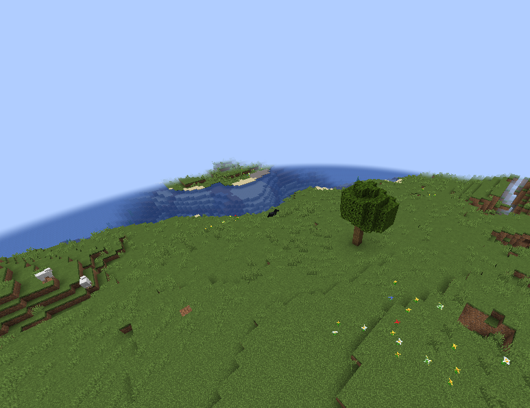
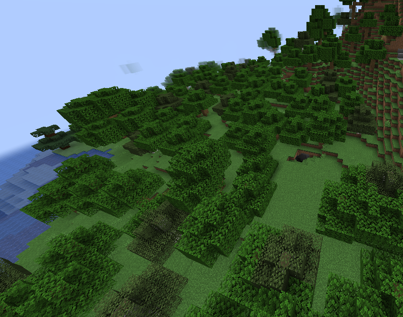
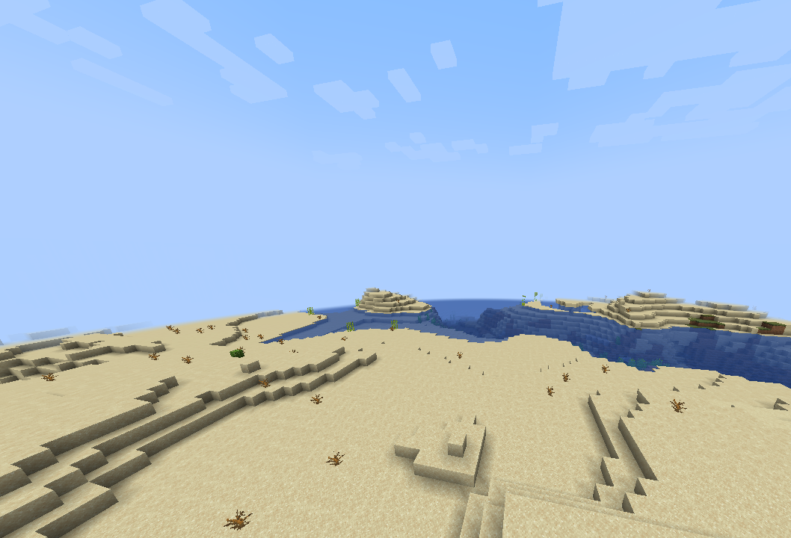
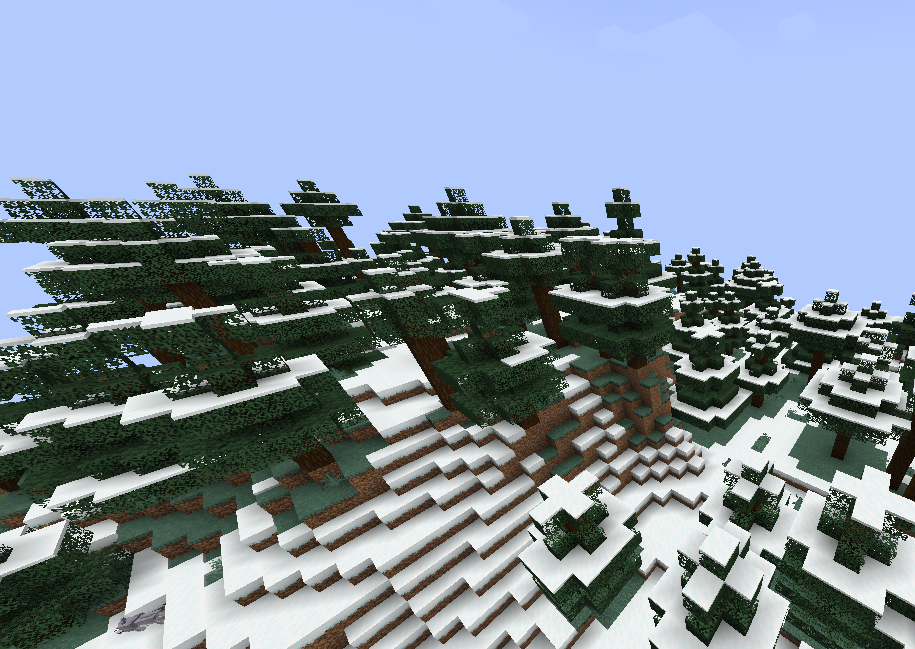
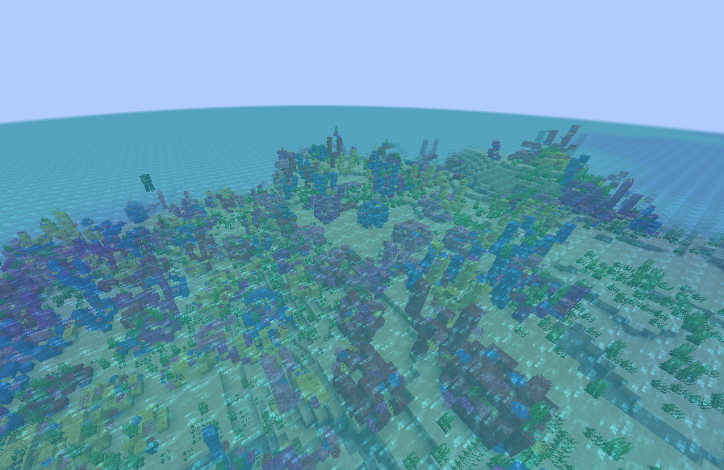

Un biome est une région du monde dans Minecraft qui a des caractéristiques climatiques et géographiques spécifiques. Chaque biome affecte ce que le joueur verra, les types de mobs qui apparaissent, et les ressources disponibles.
| Biome | Description | Ressources Clés | Image |
|---|---|---|---|
| Plain | Pauvre en arbres, l'endroit idéal pour les animaux | Viande, terre |  |
| Forest | Riche en arbres, idéale pour la collecte de bois. | Bois, Pommes |  |
| Desert | Peu de précipitations, sans arbres. Fréquemment des villages et des temples. | Cactus, Canne à sucre |  |
| Snowy Taiga | Peu de faune, couverte de neige et de glace. | Glace, Neige |  |
| Warm Ocean | Rempli d'animaux et de couleurs, peu profond | Coraux, poissons |  |